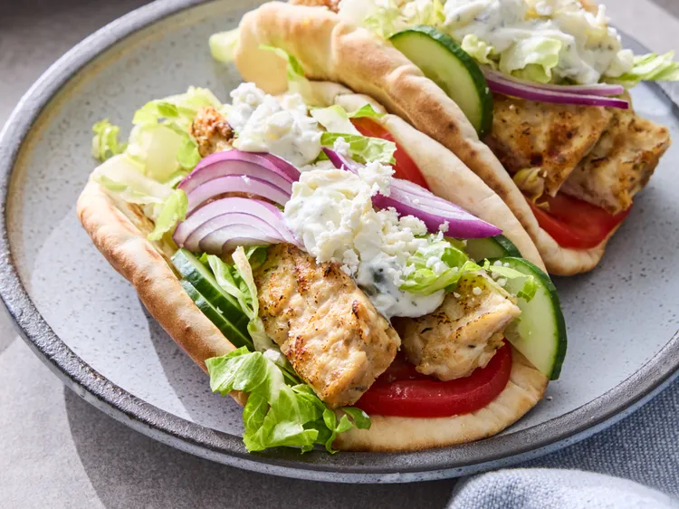

This sheet pan chicken gyros a quick lunch or summery dinner of spiced ground chicken, baked then broiled on a sheet pan. Serve on pita, and offer a selection of typical gyros toppings, like tomatoes, red onion, tzatziki sauce, feta cheese, cucumbers, and shredded lettuce.